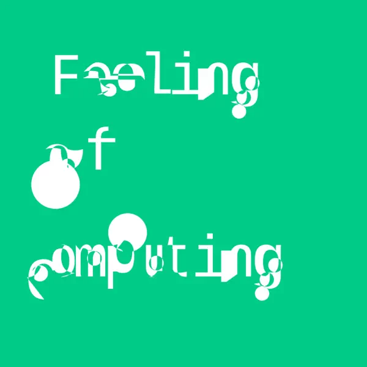

Live Feedback
in Programming Systems

While live feedback plays an important role in many interactive programming systems, its design space remains largely unmapped, making it difficult to discuss and build on the wide range of designs explored by past systems. As a first step towards establishing this map, we present six dimensions that can be used to characterize and evaluate live feedback in programming systems: granularity, reactivity, velocity, moldability, bidirectionality, and materiality.
Presented at PLATEAU 2026: PDF DOI Video
Based on an earlier presentation at LIVE 2024: Video
This work was featured on
Episode 80 of the Feeling of Computing Podcast
